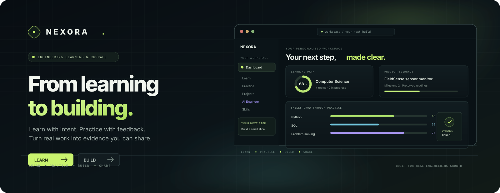

01 / LEARN
Study with direction
Browse concise topic notes, objectives, curated resources, and a learning sequence tailored to your profile.
CURATED TOPICS + PROGRESSLearn with intent. Practice with feedback. Turn real work into evidence you can share. NEXORA connects the steps between understanding an idea and shipping a project.
Public repository · Local-first development · Provider credentials stay yours

Illustrative interface preview; the metrics shown are sample UI, not learner data.
Each tool is designed to lead into the next: learn a concept, test your understanding, apply it to a project, and keep a clear record of what you actually did.
Browse concise topic notes, objectives, curated resources, and a learning sequence tailored to your profile.
CURATED TOPICS + PROGRESSAnswer checked questions, review explanations, and see a transparent mastery estimate adapt to recent attempts.
SERVER-CHECKED ANSWERSStart from an engineering brief, break it into milestones, track tasks, and save project artifacts in your workspace.
PROJECT PLANNER + WORKSPACEConnect skills to completed practice or project evidence. Self-reported claims remain clearly labeled.
EVIDENCE, NOT A CREDENTIALBuild a private, editable draft from your own details and project evidence. Export it through browser print-to-PDF.
PRIVATE BY DEFAULTPublish an opt-in portfolio and explicitly choose which profile fields, projects, email, and resume sections are visible.
YOU CONTROL VISIBILITYLearning software should help people explain what they know—not inflate credentials or quietly expose private work.
Resume fields are user-entered. Empty sections stay empty; the builder does not fabricate work experience or certificates.
Projects and portfolios start private. Public profile, contact, resume, and project sharing require explicit settings.
Skill and project signals show learner-provided or practice-linked evidence. NEXORA does not certify people or run submitted code.
Without an AI provider, structured project planning still works and is labeled as a starter blueprint, not AI output.
The app is a Next.js server-rendered platform. GitHub Pages hosts this project overview only; the interactive application needs a Node.js host and PostgreSQL.
git clone https://github.com/sauravprivatelimited369-byte/SK-Nexora-nexora.git
cd SK-Nexora-nexora
npm ci
cp .env.example .env.local
npm run devOpen http://localhost:3000. Leave DATABASE_URL blank for local embedded PostgreSQL. The first request initializes the schema and starter content.
NEXORA is built with the App Router and typed server APIs, backed by parameterized PostgreSQL queries and focused database migrations.
AI, SMTP, and Razorpay integrations are optional and configured with server-side environment variables. See the repository README for production setup.
About this page: this static project overview is designed for GitHub Pages. The full NEXORA workspace uses server-rendered routes, session cookies, and a live database, so it cannot be hosted as a static GitHub Pages app.